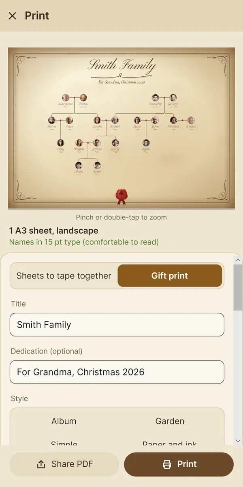

A family tree as a Christmas gift
Few gifts move grandparents like seeing their whole family together, with photos, in a frame. And you don't need to be a genealogy expert: with your phone and a couple of evenings, it's done.

Gift ideas
A framed print for the grandparents
The classic: the tree from the great-grandparents down to the grandchildren, with a photo of each person, a title and a dedication. In an 11×14 frame it looks great on a shelf; at 18×24 it takes pride of place in the living room.
The PDF for the whole family
On Christmas Day, send the PDF to the family group chat. Everyone can open it on their phone and zoom in to read every name, and the cousins finally find out what their great-grandparents were called.
A tree everyone fills in together
Start with what you know and send the tree to aunts, uncles and cousins: each one fills in their branch with Ramo, which is free for them, and sends it back. Ramo merges the versions without duplicating anyone. The final print is a gift from the whole family.
For a newborn
A baby's tree with parents, grandparents and great-grandparents is a lifelong keepsake, and a lovely gift for new parents.
Step by step, in time for Christmas
- Three weeks before: gather names, dates and photos. Ask your parents, aunts and uncles (discreetly, if it's a surprise) and take phone pictures of the old photos in the family album. If you don't know an exact date, mark it as approximate.
- Two weeks before: build the tree. Start with yourself or with the grandparents and add parents, partners and children by tapping the cards. Ramo arranges everything for you.
- Ten days before: set up the print. In Print, choose Gift print, the frame size, the style, the title and the dedication. Check that the names are readable (here's how).
- One week before: print it. Take the PDF to a print shop on matte paper and get a frame of that size. Online print services take longer in December, so don't leave it to the last day.

Which style to choose
- Parchment: aged paper, calligraphy and a wax seal. The most traditional.
- Paper and ink: a pen-and-ink drawing with a red bow, very Christmassy.
- Garden and Album: simpler and brighter, for modern homes.
You can switch styles as often as you like and see the result instantly.
Short on time?
Print the tree on Letter or Tabloid paper at home or at a nearby print shop: Ramo fits it to the page and tells you how big the names will be. And if even that's too late, the PDF on everyone's phone is a gift too.
Gift prints are part of Ramo Complete, a single payment with no subscription. Building the tree, sharing it as a PDF and printing it on sheets are free.
More guides